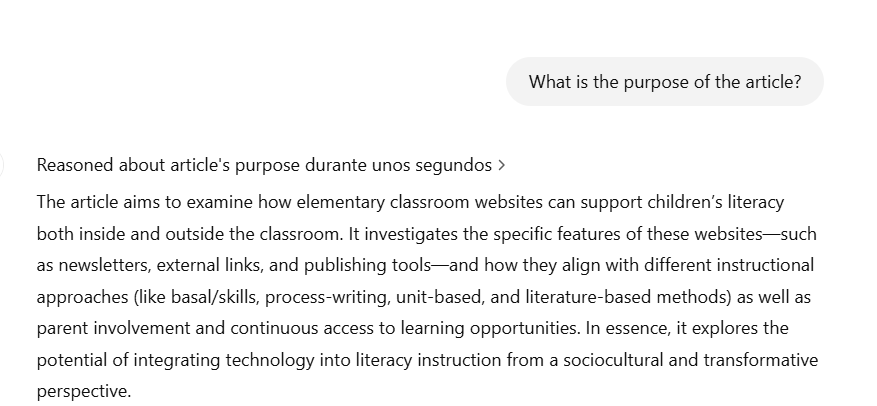

Nombre: Luna Anahy Chaparro Bustos
Código: 506231731
Asignatura: Nuevas Tecnologías De Desarrollo
Carrera: Ingeniería de Sistemas
Institución: Fundación Universitaria Konrad Lorenz
Año: 2025
Captura de pantalla de búsqueda en Sage Journal:
Se observa la búsqueda en Sage Journal.
Título: Elementary Classroom Web Sites: Support for Literacy within and beyond the Classroom
Autores: Elizabeth (Betsy) A. Baker
Resumen: La alfabetización a través de sitios web es una metodología que permite a los niños explorar virtualmente diferentes recursos, brindándoles múltiples posibilidades. Esta técnica busca aprovechar y enriquecer los conocimientos de los niños de primaria mediante el uso de tecnologías, adaptando la alfabetización. Se demuestra que, aunque los sitios web no apoyan de manera activa el proceso de alfabetización de los jóvenes, sí funcionan como herramientas de repaso. Esto se debe a que no estén completamente orientados a un cambio profundo en la alfabetización. A pesar de ello, los boletines informativos de estas páginas han sido útiles, ya que han permitido que los padres se involucren más en la educación de sus hijos y se apoyen mutuamente en su proceso de diseño.
Palabras Clave: alfabetización, tecnología, sitios web, aula, sociocultural
Enlace del Artículo: href="https://recursosvirtuales.konradlorenz.edu.co:2147/doi/abs/10.1080/10862960709336756" target="_blank">ScienceDirect (ejemplo)
Cantidad de Referencias: 36
Pregunta 1: ¿What is the technology or methodology proposed in the article?
Pregunta 2: ¿How accessible could it be for the entire public?
Pregunta 3: ¿What is the purpose of the article?
Pregunta 4: ¿How could it benefit society??
Pregunta 5: ¿What disadvantages could it bring to society?
En mi opinión, el artículo aborda de manera clara como podriamos sacar mas provecho de sitios web para la alfabetizacion de niños de primaria, a pesar de ello demostro ser un metodo no muy transformador y con el impacto esperado que se podria mejorar con una implementacion de contenido mas apto y mas participacion activa de los maestros en el proceso de alfabetizacion de manera virtual, brindando a los niños mas motivacion al aprendizaje
Conclusión:
En conclusion, si logramos aprovechar correctamente los recursos digitales con el acompañamiento pertiente dentro y fuera del aula por padres y maestros podemos transformar el procesos educativo de alfabetizacion para los niños, incentivando a la curiosidad por la literatura y el aprendizaje autonomo, que adicional puede permitirles desarrollar interacciones sociales con pares de su edad teniendo en cuenta que estos sitios tienen diferentes modulos de aprendizaje y actividades de practica que les podrana ayudar a fortaleces habilidades
Declaración de Uso de Inteligencia Artificial:
Yo, Luna Anahy Chaparro Bustos, como estudiante del programa de ingeniería de sistemas, declaro que he utilizado las siguientes herramientas de inteligencia artificial en la elaboración de este trabajo:
Confirmo que: